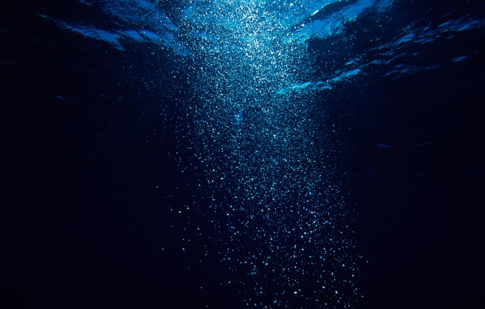

Did you know 95% of our ocean is unknown?
 It can be hard to imagine that an ecosystem so far away, so unknown, so alien that we know more about
the other planets than we do about it, would have any sort of influence and impact on our daily
lives. The deep sea begins 200 metres below the surface of the open ocean and extends to depths that
most of us can’t even fathom. Regardless of how distant we find ourselves from the sea, the deep
ocean plays a huge part in keeping the Earth habitable for all of its lifeforms.
At the very forefront of the importance of deep-sea ecosystems lies the intrinsic nature of exploring
the depths of the ocean. Doing so requires the highest levels of innovation and design in technology,
engineering, and scientific methods and analysis. The exploration of an environment so different from
everything we know requires constant development and imaginative solutions to questions we don’t even
know to ask. Many developments made in deep-sea exploration have assisted in the development of
technology and equipment needed to explore outer space and other planets. Life forms found in the
deepest, harshest parts of the ocean have supplemented our understanding of where life on Earth came
from and what possibilities lie in the stars above. From the obvious scientific value of the deep-sea,
to the less obvious cultural importance, let’s take a dive and explore the untapped potential of the
great unknown.
Of all the different geographical features of the deep sea, arguably the most well-known are
hydrothermal vents. Upon first discovery, it was unthinkable that life could exist under such immense
pressure and extremely high temperatures, but it was here that scientists discovered a new domain of
life, Archaea, bringing us a step closer to understanding our origin story. Hydrothermal vent habitats
have also led to many advances in the pharmaceutical realm through utilizing the unique adaptations life
has developed to survive under such conditions. The biochemistry of the organisms that allows them to
thrive at these depths has provided beneficial knowledge to the development of many life-saving drugs.
To date, there are four anti-cancer drugs on the market and one antiviral for neuropathic pain that have
been derived from deep-sea ... read more